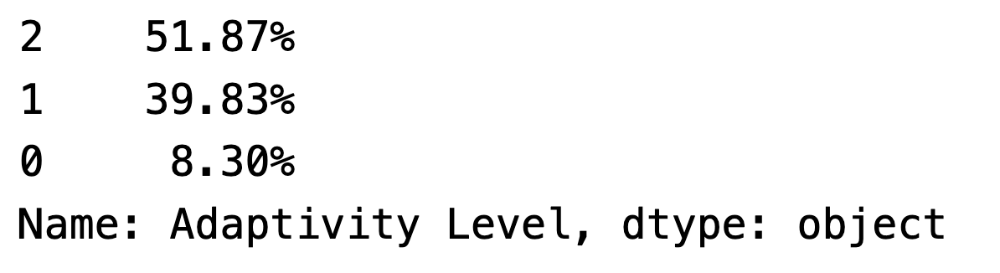
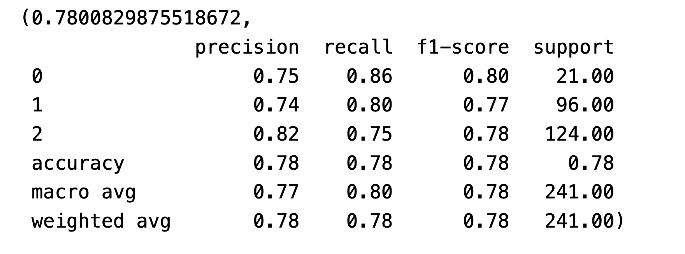
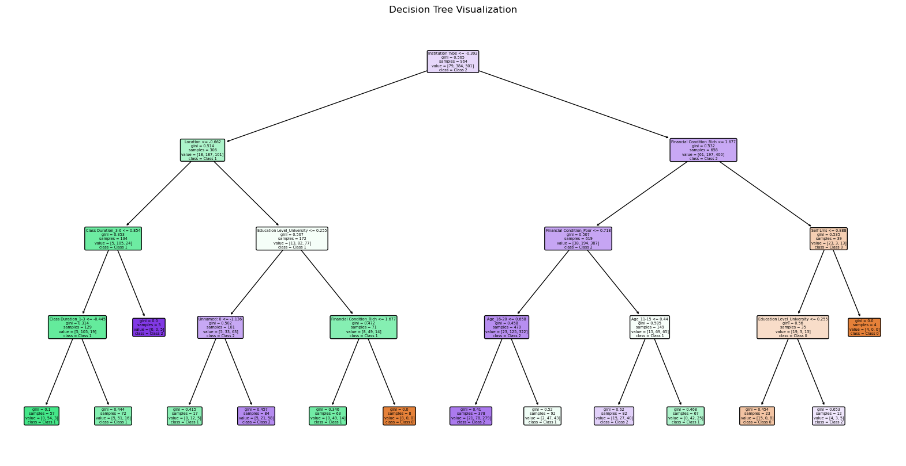
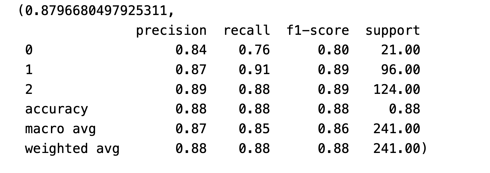
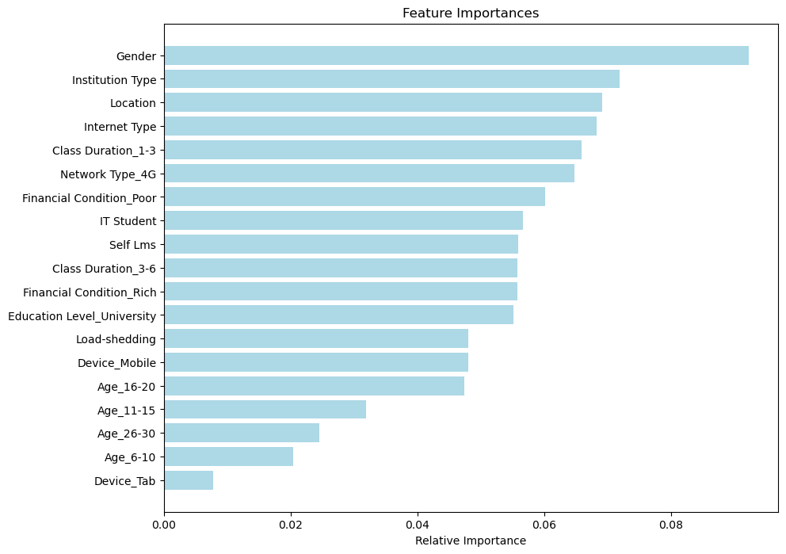
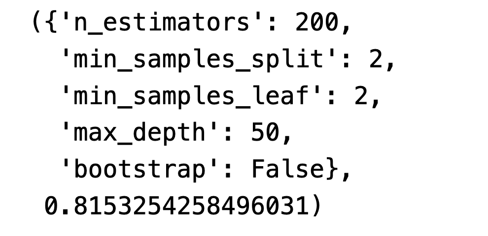
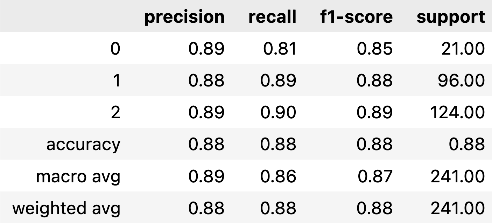

Decision Trees
Introduction to Decision Tree and Random Forest
Definition of Decision Tree: A decision tree is like a flowchart used in computer programs, but it’s used to make decisions or predictions in things like figuring out if an email is spam or not. It starts with a question at the top, like “Is the email from a known sender?” If yes, it follows one path, and if no, it goes another way. At each step, it asks more questions based on the email’s characteristics until it reaches a final answer at the end. It’s a simple and clear way to make decisions based on important factors, and it’s helpful for tasks like sorting emails or making predictions.
Definition of Random Forest: A random forest is like having a team of decision-making experts. Instead of relying on just one person to make decisions, we gather many experts who each look at a different part of the problem and focus on specific factors. This way, they don’t all think the same way and don’t get too caught up in details. When we need a final decision, we ask all the experts for their input, and we go with what most of them agree on or calculate an average of their opinions. This teamwork makes our decisions more accurate and trustworthy compared to depending on just one person’s judgment.
How Does Decision Tree work?
- A decision tree is like a game of 20 questions. It begins with a big question about the data (the root node) and then asks smaller questions about specific details (features) to narrow things down. This process keeps going until we have enough information to make a decision. The tree stops growing when we reach a point where we know the answer or when we decide it’s time to stop (based on rules like how deep the tree should go or how much data is left). At these stopping points (leaf nodes), the decision tree gives us an answer based on what it has learned from the data. It’s like solving a puzzle step by step to make predictions or classifications.
How Does Random Forest work?
- A Random Forest is like having a bunch of friends help you choose the best option. Each friend (represented by a decision tree) knows a bit about your problem but not everything. They each give you their suggestion, and then you count the votes to make the final choice. It’s like asking different friends where to go on vacation, and you go with what most of them say. This way, you’re less likely to make a bad decision because you get opinions from different angles, just like using Random Forest to make predictions in a smarter way.
Class Distribution
You can find the codes that compute the distribution of class labels here
Result:
From the graph below we can see that our dataset has tree class labels. 0 means ‘low’ adaptivity level, 1 means ‘moderate’ adaptivity level, and 2 means ‘high’ adaptivity level.
With Class Label 0 being significantly underrepresented, a classification algorithm might struggle to correctly identify instances of this class. This is because there’s less data for the algorithm to learn from for this class, leading to potential biases towards the more common classes. The algorithm might overfit to the majority classes (Class Label 2 and 1) since there’s more data available for these classes, and it might perform well on the training dataset but poorly on unseen data, especially for the minority class.

Baseline Model
Baseline Model: The baseline model implemented here is a simple decision tree model. It uses the ‘DecisionTreeClassifier’ from the scikit-learn library, which is a basic yet powerful implementation of a decision tree for classification tasks. Since most of the variables of our dataset are categorical, so we only do the classification task here.
Results:
The model achieved an accuracy of approximately 78%. This indicates that, in general, the model correctly predicts the adaptivity level around 78% of the time across all classes. While this is a decent starting point, there’s room for improvement, especially considering the class imbalance in our dataset.
In the class-wise analysis of the decision tree model, we can observe distinct performance metrics for each class. Class 0, which is the least represented in the dataset, shows a precision of 75% and a recall of 86%, indicating a good ability to correctly identify and capture instances of this class, with an F1-score of 80%. Class 1 demonstrates similar performance with a precision of 74% and a recall of 80%, leading to a F1-score of 77%, suggesting that the model is also quite effective in identifying this class. The most represented class, Class 2, shows a precision of 82% and a recall of 75%, with an F1-score of 78%, indicating a strong capability of the model to correctly predict this class. The model’s performance varies across different classes, performing best with the most represented class (Class 2). This variation underscores the challenge of class imbalance in the dataset and highlights areas where model performance could be enhanced.

- Visualization of the Tree: The decision tree has been visualized with a limited depth of 4 for better interpretability. The actual tree used for classification in the previous code should be more complex and detailed. On this tree plot, each node represents a decision point and is labeled with the feature and threshold value used for splitting. The branches represent the outcome of the decision (left for ‘True’ and right for ‘False’). The leaves of the tree represent the final decision or the class labels (in this case, ‘Class 0’, ‘Class 1’, and ‘Class 2’). The color in the nodes indicates the majority class at that node, with the shade intensity representing the proportion of samples in that class.

Model tuning
Random Forest: Random Forest model is a common and effective approach for model tuning and improvement over a baseline decision tree model. It is an ensemble learning method that operates by constructing multiple decision trees during training and outputting the class that is the mode of the classes (classification) of the individual trees. You can find all the codes here
The Random Forest model has not only achieved a commendable accuracy of approximately 87.97% but also outperformed the baseline decision tree model in all metrics across the different classes. This enhanced performance is reflected in the precision, recall, and F1-scores, which are uniformly high across the board—showcasing the model’s improved ability to correctly identify and classify instances for each adaptivity level. The substantial increase in recall for Class 1 to 91%, and the high F1-scores for Classes 1 and 2 at 89%, illustrate the model’s strength in balancing precision and recall, a significant improvement over the baseline model.
The consistent precision across all classes suggests that the Random Forest model is less prone to overfitting, a typical challenge with single decision trees, and indicates its superior generalization ability on unseen data. The support values reflect a degree of class imbalance; however, the Random Forest model’s ability to maintain high performance metrics despite this challenge further establishes its superiority over the simpler decision tree model. Overall, the Random Forest’s ensemble approach, which aggregates the predictions of multiple decision trees, has clearly provided a more accurate and reliable model for this dataset.

- The feature importance plot from our Random Forest model reveals that ‘Gender’, ‘Institution Type’, and ‘Location’ are the top three factors influencing student adaptability, indicating significant roles for demographic and institutional contexts. In contrast, ‘Device_Tab’ and the age categories of ‘Age_6-10’ and ‘Age_26-30’ are the least influential, suggesting that technology type and certain age ranges are less critical in predicting adaptability outcomes. Overall, the model sheds light on the hierarchy of factors that contribute to student adaptability, with demographic factors seemingly at the forefront. This can guide educators and policymakers in tailoring their strategies to the most impactful areas, potentially enabling more efficient and effective improvements in educational adaptability.

Hyperparameter tuning: We use ‘RandomizedSearchCV’ for the hyperparameter tuning of the Random Forest model. ‘RandomizedSearchCV’ is a hyperparameter optimization technique that helps to find the best possible combination of hyperparameters for a given model. It differs from ‘GridSearchCV’ by not exhaustively searching the entire parameter space, but rather, it selects a random subset of the parameters.
The graph below shows the results of hyperparameter tuning using ‘RandomizedSearchCV’. The tuning process has identified a set of hyperparameters that resulted in the best performance based on the cross-validation strategy. The optimal hyperparameters identified for the Random Forest model through the tuning process include 200 trees, a minimum sample split of 2 for internal nodes, and a minimum of 2 samples at each leaf node, suggesting a preference for complex, deep decision trees in the ensemble. With the maximum depth set at 50, the model is allowed to grow quite deep, potentially capturing intricate patterns in the data, but also increasing the risk of overfitting. This risk is further compounded by the choice of bootstrap: False, which utilizes the entire dataset for building each tree, rather than bootstrapped samples that promote diversity among the trees. Despite these complexities, the model achieved a cross-validation score of approximately 81.53%, indicating a robust predictive performance.
Overall, these hyperparameters suggest that the best model found by the ‘RandomizedSearchCV’ is a complex one, with many trees and deep structures, that does not rely on bootstrapping. It has achieved a reasonably good cross-validated performance on the dataset used for tuning.

Final results
The tuned Random Forest model exhibits a commendable performance as evidenced by the classification report. The precision scores, sitting at 0.89 for class 0, 0.88 for class 1, and 0.89 for class 2, show high accuracy in the model’s predictive capability across all classes. This suggests that when the model predicts a particular class label, it is very likely to be correct. Recall scores are also impressive, particularly for class 1 and class 2, with values of 0.89 and 0.90 respectively, indicating the model’s strong ability to identify true instances of these classes.
The F1-scores, which balance precision and recall, are consistently high—0.85 for class 0 and above 0.88 for classes 1 and 2. These scores reflect a well-balanced model, especially for the majority classes, signifying an efficient trade-off between precision and recall. The support values show that the model is dealing with some class imbalance, which it has managed effectively, as indicated by the robust F1-scores.
Overall, the model achieves an accuracy of 88%, meaning it correctly predicts the class label for an individual observation about 88% of the time across the dataset. The macro and weighted averages for precision, recall, and F1-score stand at around 0.88, which speaks to the model’s consistent performance despite the varied representation of each class. This level of accuracy, coupled with the balanced macro and weighted scores, underscores a model that performs well in classifying across different categories and is reliable for predictive insights.

Conclusions
Upon analyzing the performance of the baseline Decision Tree, the pre-tuned Random Forest, and the hyperparameter-tuned Random Forest models, several insights emerge. The baseline Decision Tree model, with an overall accuracy of 78%, shows commendable recall rates, especially for class 0, indicating its proficiency in identifying actual instances of this class. However, its precision lags behind the Random Forest models, suggesting it incorrectly labels more instances as positive for each class.
The pre-tuned Random Forest model marks a significant leap in precision for all classes, denoting a reduction in false positives, with class 2 showing the most considerable improvement. This model also boasts a high recall for class 1, though it slightly underperforms for class 2 in recall compared to the Decision Tree. A notable increase in overall accuracy to 88% reflects its enhanced generalization capabilities.
The hyperparameter-tuned Random Forest maintains this high accuracy while demonstrating improved precision and F1-scores across all classes. The precision improvements indicate a more discerning model that’s less prone to false positives. The F1-scores, which account for both precision and recall, are particularly higher for class 0 in the tuned model, signifying a more balanced performance. Although the overall accuracy is unchanged from the pre-tuned model, the increase in macro and weighted average F1-scores suggests a more uniform enhancement in the model’s predictive ability across all classes, an indication of well-executed tuning.
The consistency in accuracy before and after tuning, coupled with gains in precision and F1-scores, underscores the efficacy of hyperparameter tuning in refining the Random Forest model. This fine-tuning has led to a model that not only maintains robust accuracy but also offers a more balanced classification across the different classes, a desirable trait in multi-class classification tasks on imbalanced datasets.